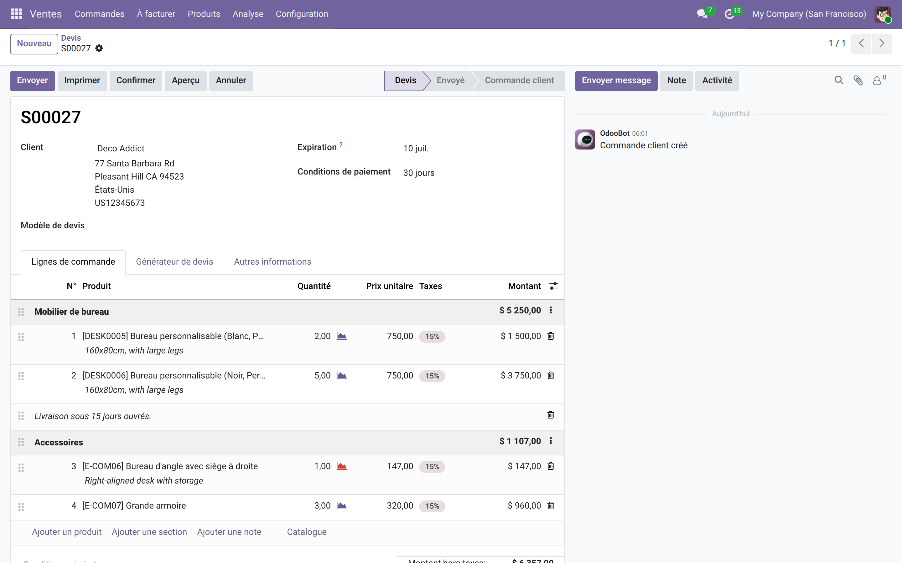
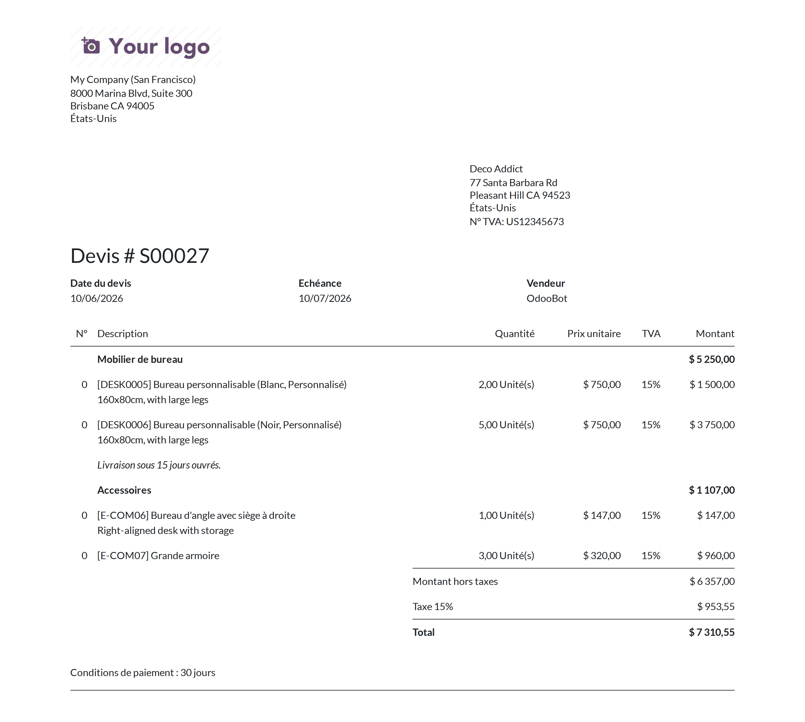

Numérotation automatique des lignes de devis et bons de commande, à l'écran et sur le PDF.
Sur les devis volumineux, faire référence à « la ligne du bureau d'angle » devient vite ambigu. Ce module numérote automatiquement chaque ligne produit des devis et bons de commande — à l'écran comme sur le PDF envoyé au client — pour des échanges sans équivoque : « voir ligne 12 ».
Dès l'installation, chaque devis affiche la numérotation en première colonne du tableau des lignes. Les sections (« Mobilier de bureau », « Accessoires ») structurent le devis sans consommer de numéro.

Le rapport imprimé reprend la même numérotation : le client et le commercial parlent des mêmes lignes.

addons_path.Licence LGPL-3 — compatible Odoo 15.0 à 19.0 (Community et Enterprise).